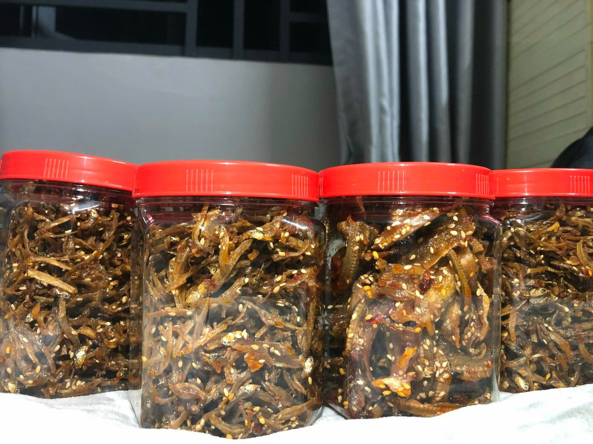
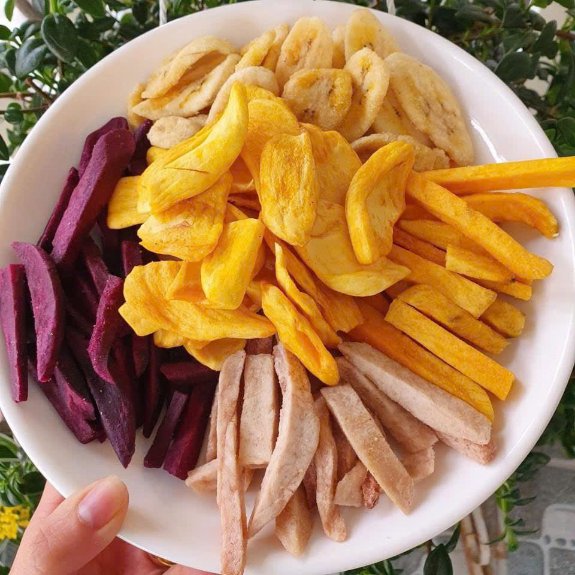

Ăn Vặt Nắng Quảng – nơi mà những tín đồ ăn vặt không thể bỏ qua! 🌞🍡 Chúng tôi mang đến cho bạn những món ăn vặt ngon "khó cưỡng", đặc biệt là các món cá rim mặn ngọt cực kỳ đậm đà, giòn tan mà không kém phần thơm ngon, cùng với trái cây sấy thăng hoa ngọt lịm, giòn rụm, như thể bạn đang nhâm nhi những viên ngọc trời! ✨
Tất cả các sản phẩm đều được chọn lựa kỹ càng, không có đường, không chất bảo quản – chỉ có hương vị tự nhiên, vừa ngon lại vừa lành mạnh, bạn có thể thoải mái thưởng thức mà chẳng lo béo.
😋💚 Không cần phải suy nghĩ quá nhiều đâu, chỉ cần một gói Ăn Vặt Nắng Quảng, bạn đã có ngay những khoảnh khắc ăn vặt vui nhộn mà lại không lo lắng về sức khỏe! Hãy thử ngay và cảm nhận sự khác biệt! 🥳🎉
Menu chính bao gồm
Bạn có thể mua thêm nhiều sản phẩm hơn tại Shoppe của chúng tôi
Sản phẩm của chúng tôi là một sản phẩm tốt cho sức khỏe vì không chức chất bảo quản và các chất phụ gia bạn có thể tham khảo thêm về sản phẩm của chúng tôi Click vào đây để biết thêm chi tiết.
Cá Rim
Cá Rim là món ăn vặt giòn tan, thơm ngon, thích hợp để ăn vặt , ăn cơm và ăn nhậu.
Trái Cây Sấy Khô
Trái cây sấy khô tự nhiên, giữ nguyên hương vị tươi ngon, sự lựa chọn số một cho một món ăn lành mạnh.